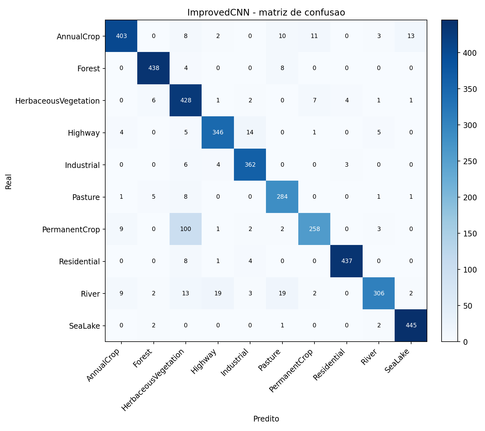
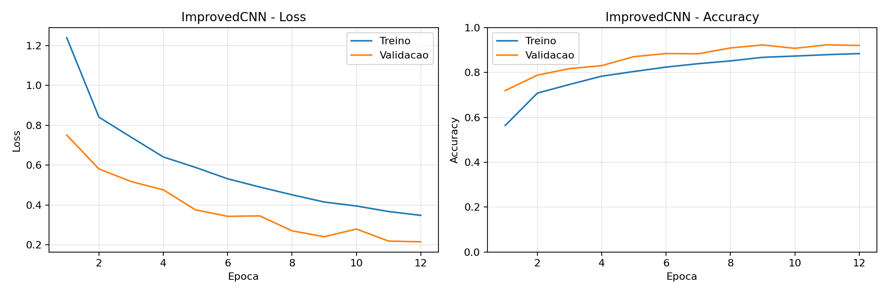
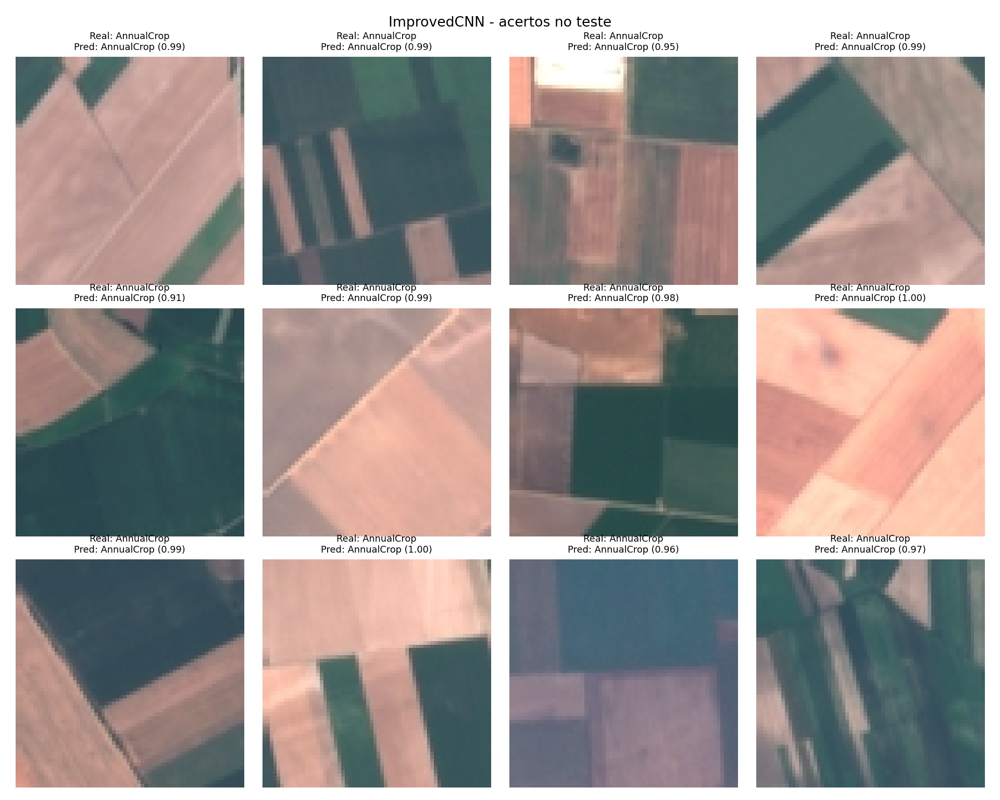

Plataforma cloud de classificacao automatica de uso e cobertura do solo a partir de imagens RGB do satelite Sentinel-2, hospedada integralmente na AWS.
O monitoramento manual de areas agricolas, florestais e urbanas e lento, caro e impossivel de escalar. Regioes remotas ficam sem cobertura. Mudancas ambientais sao identificadas tarde demais para intervencao eficaz.
Especialistas de campo e levantamentos aereos exigem recursos elevados e nao podem ser acionados de forma continua sobre grandes areas.
Uma equipe humana nao consegue monitorar simultaneamente florestas, areas agricolas e zonas urbanas em escala regional ou nacional.
Areas de dificil acesso ficam fora do monitoramento regular, tornando imperceptiveis degradacoes ambientais e mudancas de uso do solo.
Sem analise automatizada, impactos climaticos e ambientais sao identificados ja em estagio avancado, quando a intervencao e mais dificil e custosa.
O dataset EuroSAT, base de treinamento deste projeto, e composto integralmente por imagens RGB extraidas de cenas capturadas pelo satelite Sentinel-2, operado pela Agencia Espacial Europeia (ESA) dentro do programa Copernicus.
Cada imagem representa um recorte real da superficie terrestre capturado em orbita a aproximadamente 786 km de altitude. O modelo classificador foi treinado sobre dados genuinamente orbitais, nao simulacoes ou imagens aereas convencionais.
A plataforma Orbital Land Classifier simula o funcionamento de sistemas comerciais de analise de imagens satelitais, como os utilizados por Planet Labs, Descartes Labs e o portal Copernicus da propria ESA: dados orbitais sao submetidos a modelos de inteligencia artificial em infraestrutura cloud e o resultado e disponibilizado via interface web.
| Operador | ESA / Copernicus |
| Altitude orbital | 786 km |
| Resolucao RGB | 10 m/pixel |
| Revisita | 5 dias (par 2A / 2B) |
| Imagens no dataset | 27.000 recortes |
| Dimensao do recorte | 64 x 64 pixels |
| Classes identificadas | 10 categorias de solo |
A aplicacao e hospedada na AWS com pipeline CI/CD totalmente automatizado via GitHub Actions, seguranca baseada em principio de menor privilegio e monitoramento ativo via CloudWatch e Budgets.
| Servico AWS | Funcao na solucao | Criterio |
|---|---|---|
S3 Static Website |
Hospeda a aplicacao web com URL publica acessivel | Infraestrutura |
IAM Role + OIDC |
Autenticacao federada do GitHub Actions sem credenciais estaticas armazenadas | Seguranca |
KMS — CMK |
Chave gerenciada usada para criptografar parametros no Parameter Store | Seguranca |
SSM Parameter Store |
Armazena configuracoes da infraestrutura como SecureString criptografado | Seguranca |
CloudWatch Metrics |
Monitora requisicoes, erros 4xx e disponibilidade da aplicacao | Monitoramento |
AWS Budgets |
Alerta de custo mensal com notificacao automatica por e-mail | Monitoramento |
GitHub Actions |
Pipeline CI/CD acionado automaticamente por push na branch main | CI/CD |
Dois modelos CNN foram implementados e treinados do zero em PyTorch, sem uso de modelos pre-treinados ou transfer learning. O modelo ImprovedCNN superou a meta de 88% de acuracia no conjunto de teste.



A solucao contribui diretamente para tres ODS da ONU atraves do monitoramento automatizado de uso e cobertura do solo via imagens orbitais Sentinel-2.
A classificacao automatica de areas de cultivo anual, cultivo permanente e pastagem apoia o monitoramento da producao agricola e a gestao territorial rural. Agricultores e orgaos publicos identificam rapidamente alteracoes em areas de plantio sem necessidade de levantamentos presenciais.
O acompanhamento continuo de florestas, vegetacao herbácea e corpos d'agua via imagens Sentinel-2 contribui para analises de mudancas de cobertura do solo. A identificacao precoce de degradacao ambiental permite intervencao antes que os impactos se tornem irreversiveis.
A identificacao automatizada de florestas, vegetacao natural, rios e areas de pastagem auxilia programas de preservacao ambiental e o monitoramento de ecossistemas em escala regional, sem depender de equipes de campo ou levantamentos aereos.
| Instituicao | FIAP |
| Disciplina | Cloud Computing — Global Solution 2026 |
| Turma | 2026/1 — manha |
| Tema | Industria Espacial |
| Integrantes |
Rafael Carvalho Mattos — RM99874
Luiza Cristina Silva — RM99367 Rafael Autieri dos Anjos — RM550885 Levy Nascimento Junior — RM98655 |
| Repositorio | github.com/rcm2005/ACV-Global-Solutions |